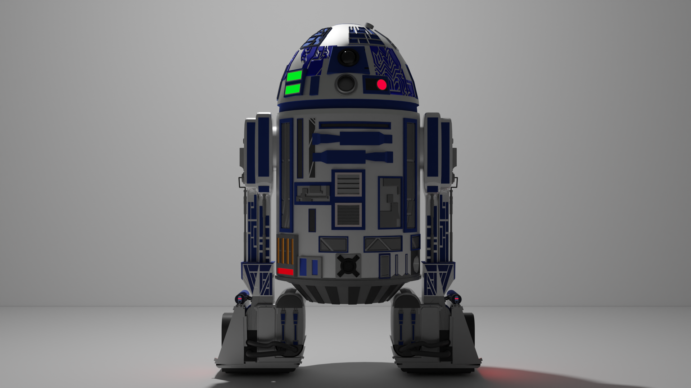
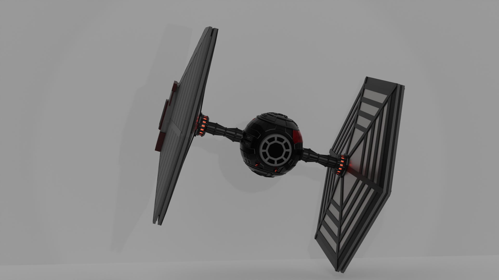

Всё началось за несколько дней до 24 февраля
Тогда передо мной был выбор, или начать заниматься моделированием, или уйти в программирование. Это было время моего отпуска, и 24 числа я должен был выходить на работу, однако, из-за начала войны этого не произошло. Вот тогда то я и начал заниматься моделированием, которое позже переросло в геймдев. Но начнем по порядку. Сначала я увлекался блендером, и создавал кроссовки, роботов и архитектуру.
 
После этого этапа, работа в Макдональдсе снова возобновилась, и время на моделирование у меня не осталось. Однако осталась идея, я знал, что хочу научиться скульптить своих персонажей, воплощать книжных героев в жизнь. Ну или хотя бы в 3D. Я начал копить деньги и уже весной ушел с работы, сразу же начав свой Zbrush курс. За курс я вынес много интересного для себя, хоть и не смог доделать ни 1 персонажа до конца(много красивых наработок, но ни одного финального рендера).
В конечном счете, тяга к графике прошла. Позже, я успел попробовать себя в Unity разработке, моделировании, CAD-моделировании, скульптинге, рендеринге и 2D. Казалось бы, а почему менять свою деятельность, если так много времени было потрачено на графику? Ведь можно было развиваться в этом направлении и ни о чем не думать. Ответ прост. Всё это время, я думал о том, как бы мои продукты взаимодействовали с блокчейном. Сначала я хотел стать арт-художником в гейм-дев студии, которая разрабатывает проекты в WEB3. Но увидев, в насколько печальном состоянии находится отрасль WEB3 GameDev, я понял, что хочу создавать свой собственный продукт, и начал изучать C# и Unity. Изучив C# и Unity я снова понял, что всё это время я хотел изучать и исследовать криптовалюту. А это было затянувшимся хобби, которое я по ошибке принимал за свою основную деятельность.
Как и тогда, децентрализованный мир поглотил меня. Я видел и вижу в нем спасение от большого количества проблем. Я вижу в нём то равенство, которое общество безуспешно пытается выстроить. Независимость и конфиденциальность, обеспеченное кодом, а не человеческим фактором и третьей стороной.